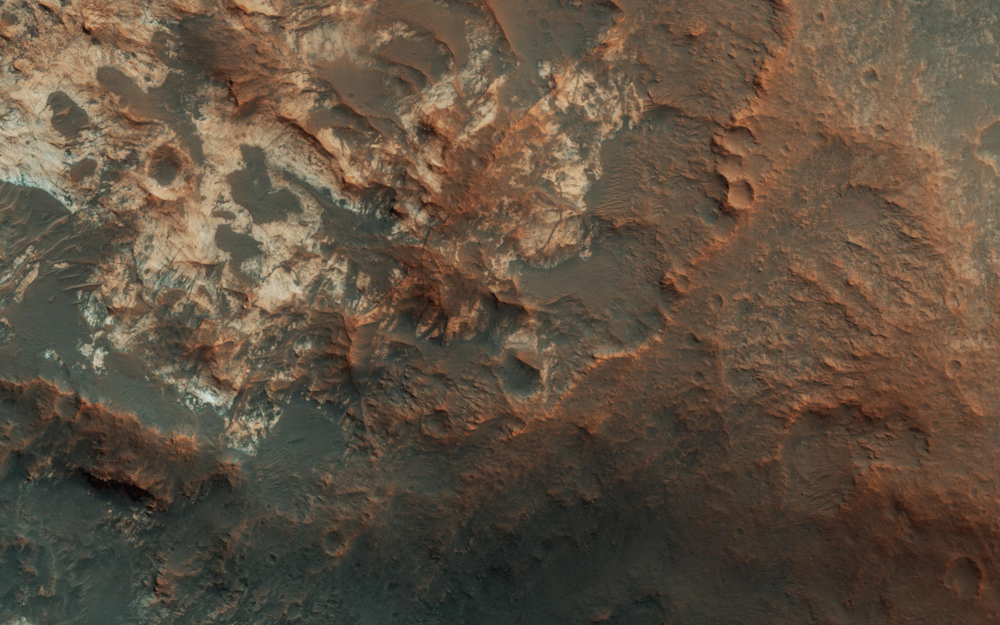

MAЯPS
Mars Astronaut Route Planning & Simulation
Mission planning and exploration system — Acidalia Planitia
Image: NASA photograph taken from the surface of Mars by a rover. It is used only as a welcome image and does not show Acidalia Planitia.
Landing in progress
The first-person exploration view is added in a later stage.
The interactive map is integrated in a later stage.
Mission Log
The mission log is added in a later stage.
Mission Archive
The mission archive is added in a later stage.